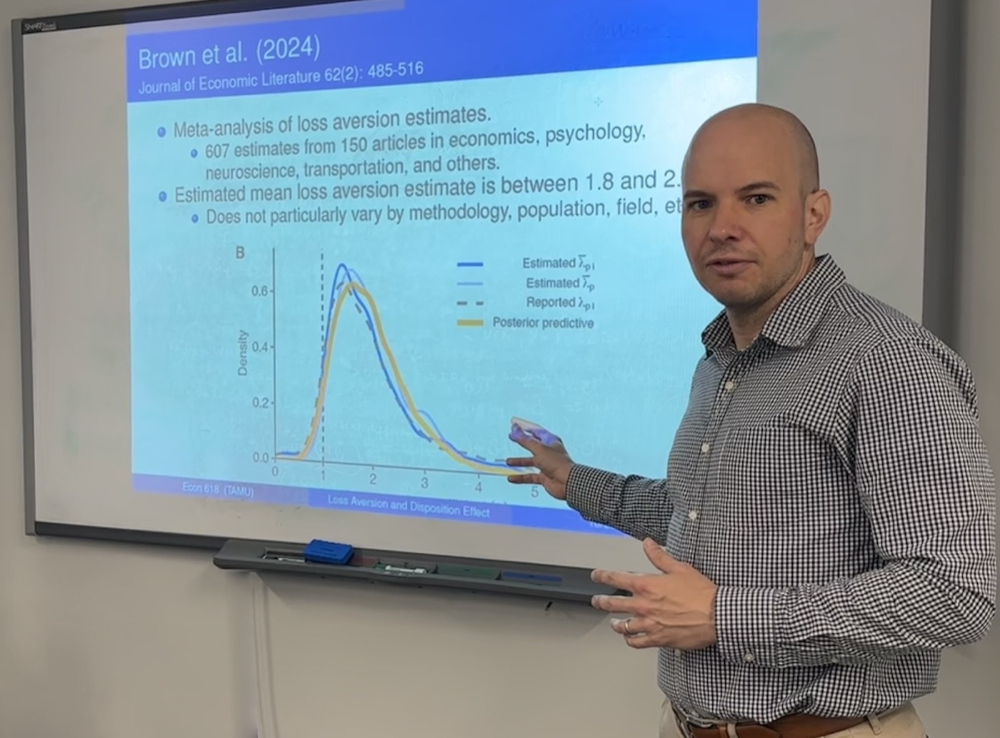

Teaching
I teach classes on experimental methodology, behavioral financial economics, and game theory. The courses are demanding: while some of the insights can be taught quickly, a full understanding requires considerable quantitative work.
My classes also include optional and additional materials so that students can develop their research agenda. I have worked with such students at the undergraduate, MS, and PhD levels, and several have become coauthors. My own undergraduate research produced my first paper, Brown and Kagel (2009), and set the direction of my career. (Prospective students should know that I supervise research only for students enrolled at Texas A&M.)

PhD
ECON 655
Experimental Economics
Hands-on introduction to designing and running economics experiments, covering choice behavior, survey research, and planned economic environments.
MS
ECON 618
Behavioral Financial Economics
Examines how real-world financial decisions by individuals and firms differ from predictions of standard economic theory, drawing on behavioral economics and psychology.
Undergraduate
ECON 459
Games and Economic Behavior
Game theory for advanced undergraduates: equilibrium concepts, strategic and extensive form games, evolutionary refinements, and applications to auctions, bargaining, and oligopoly.